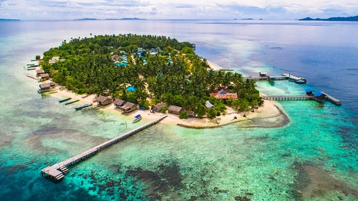
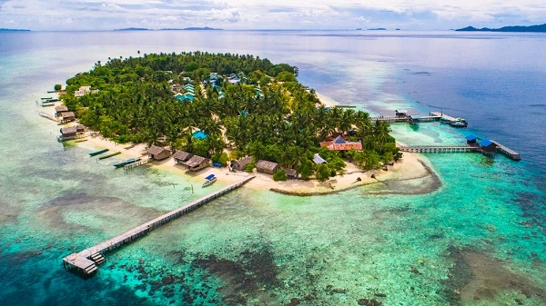
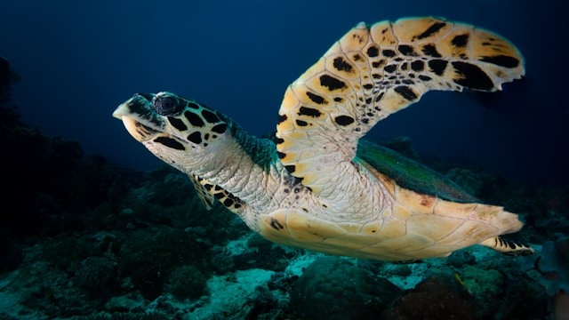
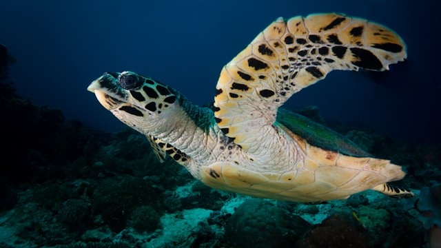
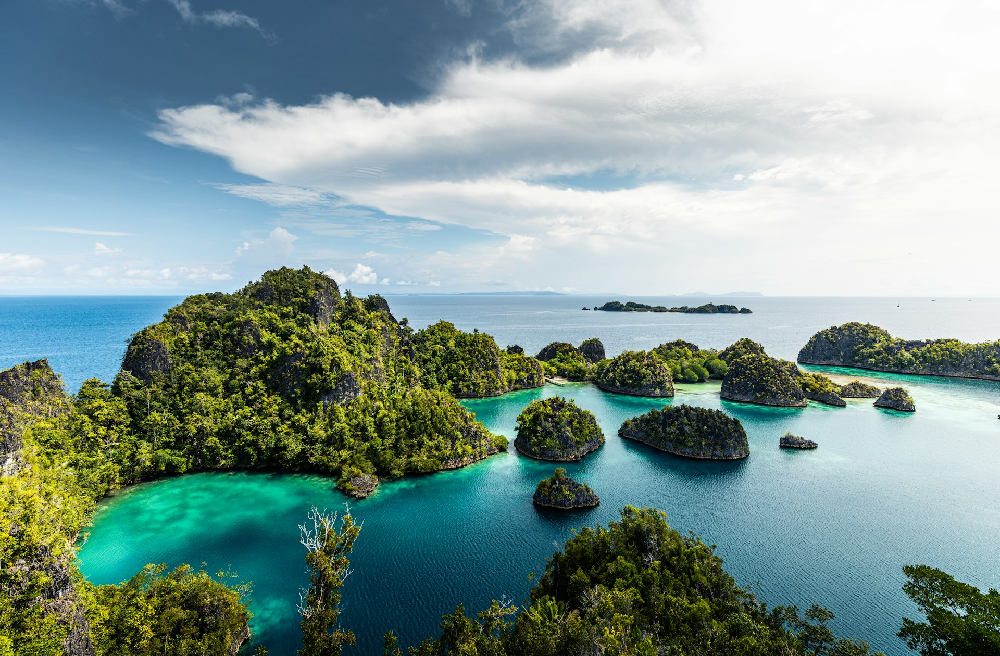
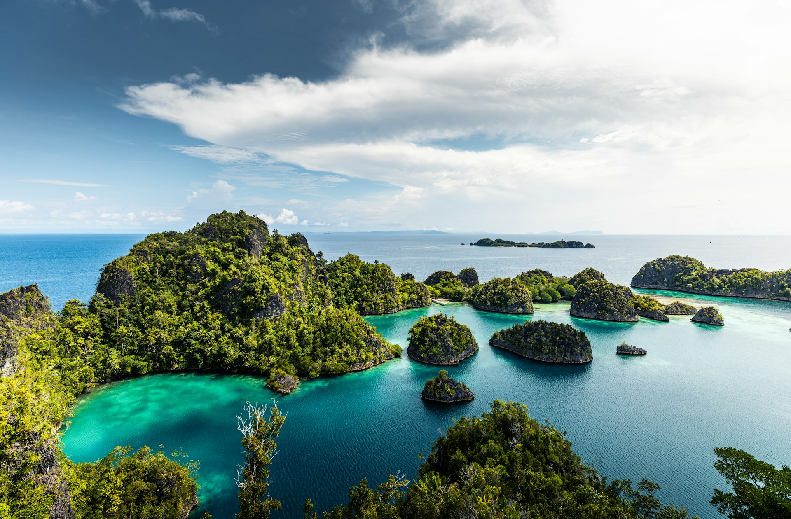

Kepulauan Raja Ampat berada di bagian paling barat Papua dan membentang di area seluas kurang lebih 4,6 juta hektar. Kabupaten Raja Ampat terdiri dari 4 pulau besar yaitu Pulau Waigeo, Batanta, Salawati dan Misool, dan 1.847 pulau-pulau kecil lainnya. Nah, nama Raja Ampat sendiri diyakini berasal dari legenda masyarakat setempat yang percaya bahwa zaman dahulu kala ada seorang wanita yang menemukan tujuh telur, empat telur tersebut menetas menjadi raja-raja yang berkuasa di empat pulau utama. Tersisa tiga lainnya, satu menjadi batu, satu menjadi wanita, dan satu lagi menjadi makhluk gaib atau hantu.Terlepas legenda yang dipercayai masyarakat setempat, keindahan yang disuguhkan oleh Raja Ampat merupakan fakta yang tak bisa diganggu gugat.
Bagi Sobat Pesona yang gemar diving dan snorkeling, wilayah perairan Raja Ampat adalah salah satu destinasi diving terbaik di dunia. Menurut laporan sebuah organisasi sosial lingkungan internasional, The Nature Conservancy and Conservation International, sekitar 75% spesies karang di dunia hidup di kepulauan Raja Ampat. Destinasi ini memiliki kekayaan dan keunikan spesies yang tinggi dengan ditemukannya 1.318 jenis ikan, 699 jenis moluska (hewan lunak), dan 537 jenis terumbu karang. Rasakan sendiri sensasi menyelam dan bertemu dengan ragam jenis biota laut yang unik, seperti kuda laut kerdil (pygmy seahorse), ikan kelelawar, hingga dugong bisa kamu temukan di wilayah perairan Raja Ampat.

 



 

 
